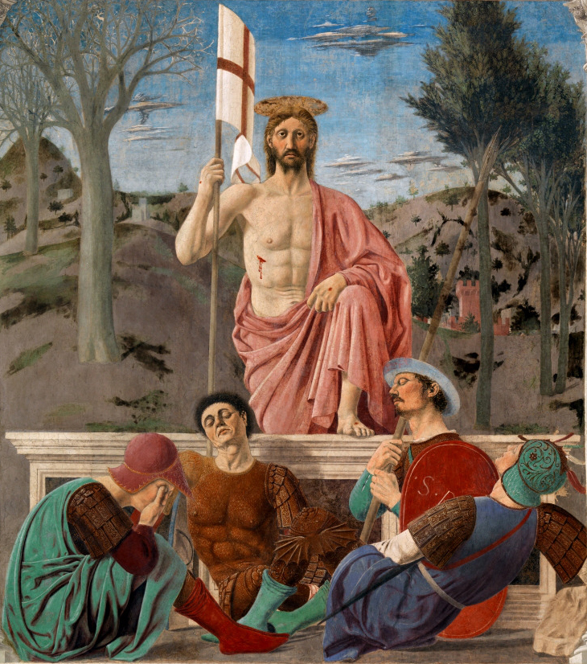
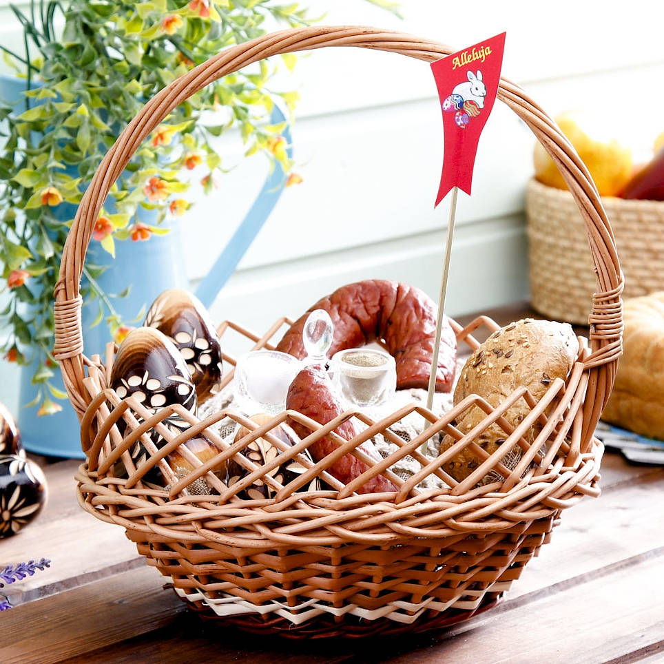
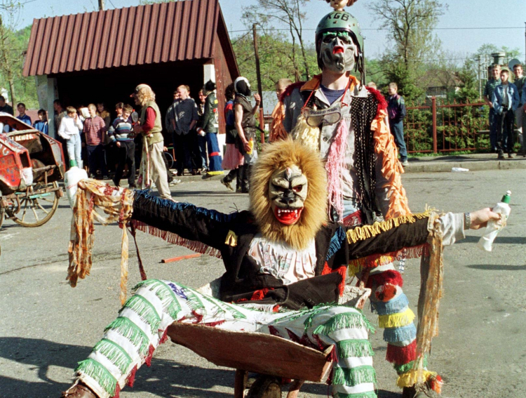
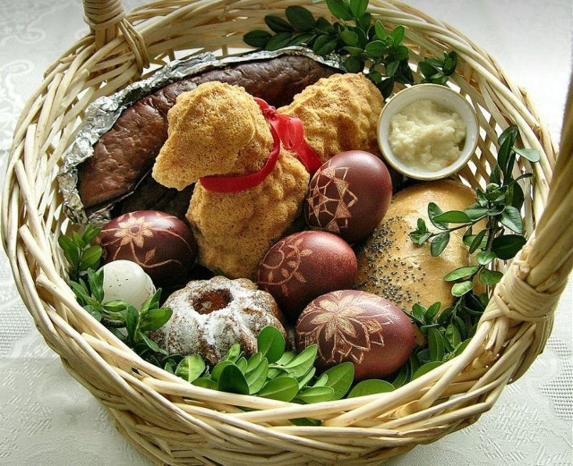

HISTORIA WIELKANOCY
Wielkanoc to nie tylko najważniejsze święto w kalendarzu liturgicznym, ale także czas, w którym natura budzi się do życia, a domy wypełniają się zapachami tradycyjnych potraw. Historia tych świąt to fascynująca podróż przez wieki, łącząca wiarę z ludowymi obrzędami.Skąd się wzięła Wielkanoc

Początki świętowania Wielkanocy są nierozerwalnie związane z żydowską Paschą. Chrześcijaństwo nadało tym obchodom nowy wymiar, skupiając się na zmartwychwstaniu, jednak nazwa i czas świętowania pozostały bliskie korzeniom. Co ciekawe, wiele elementów, które znamy dzisiaj, zostało zapożyczonych z dawnych słowiańskich Jarych Godów - radosnego święta powitania wiosny, podczas którego również czczono energię życia i słońca.Tradycje w Polsce

Polska tradycja wielkanocna jest niezwykle barwna i bogata. Wszystko zaczyna się od Niedzieli Palmowej, a kulminację osiąga podczas Triduum Paschalnego. Kluczowym momentem dla każdej polskiej rodziny jest Wielka Sobota i udanie się do kościoła z wiklinowym koszyczkiem. W środku muszą znaleźć się jajka, chleb, sól, wędlina i baranek. Niedzielne śniadanie rozpoczyna się od dzielenia święconym jajkiem, co ma zapewniać zdrowie i pomyślność wszystkim domownikom przez cały rok.Różnice między regionami

Polska nie jest jednolita pod względem zwyczajów - każdy region ma swoje „perełki”. Na Kaszubach tradycyjnie unika się bicia dzwonów aż do rezurekcji, zastępując je drewnianymi kołatkami. Na południu Polski, zwłaszcza w okolicach Wieliczki, do dziś kultywuje się zwyczaj „Siudej Baby”, a pod Krakowem spotkamy Pucheroków - chłopców w wysokich czapach recytujących zabawne oracje. .Symbolika

Wszystko, co kładziemy na wielkanocnym stole, ma swoje ukryte znaczenie. Jajko to absolutny fundament - symbol zwycięstwa życia nad śmiercią. Baranek (cukrowy, z ciasta lub masła) symbolizuje czystość i pokorę.